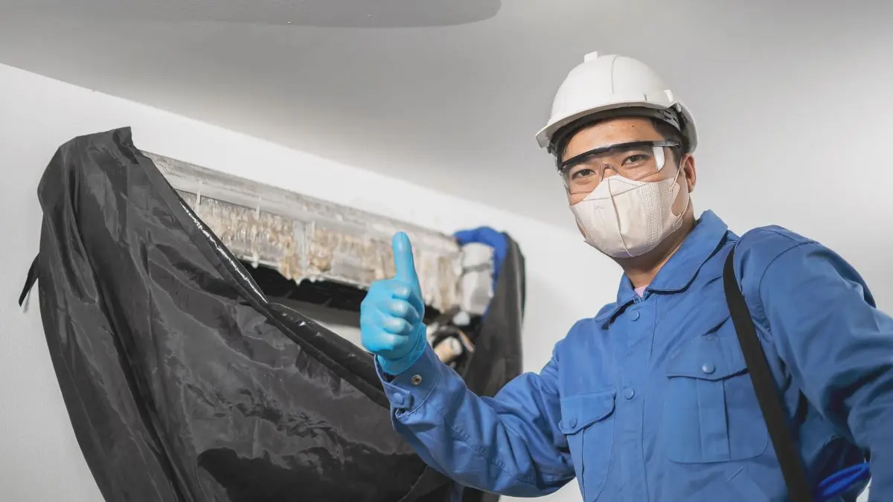

شركة تنظيف مكيفات بالخرج | تواصل مع نقل الرياض 0541145506

مع الارتفاع الكبير الغير مسبوق في درجات الحرارة والرطوبة فى مدينة الخرج يزداد البحث عن شركة تنظيف مكيفات بالخرج وذلك بسبب مواجهة كثير من العملاء صعوبة في الحفاظ على نظافة مكيفاتها الهوائية وكفاءتها.
حيث يتعرض مجرى الهواء داخل التكييف إلى الأتربة والغبار بشكل مستمر مما يتسبب في تكون ترسبات ترابية في داخله قد تؤثر على حركة دوران المراوح مما يجعلك تسمع صوت مرتفع أو تتسبب في ضعف مرور الغاز مما ينتج عنها ضعف في تبريد المكيف .
كما أن هناك العديد من الأعطال التي تنشأ نتيجة قلة التنظيف والصيانة للمكيف مثل تسرب المياه،ضعف أداء المكيف، تخزين الثلج في الداخل وبالتالى تقل كفاءة التبريد و يقل العمر الافتراضي للتكييف .
وبالتالي يتجه كثير من العملاء للبحث عن أفضل شركة تنظيف مكيفات بالخرج تضمن لهم الجودة والسرعة وأفضل الأسعار.
ولهذا يمكنك مراسلتنا نحن شركة نقل الرياض عبر الواتساب من خلال هذا الرابط
ما هى أفضل شركة تنظيف مكيفات بالخرج؟
مع إرتفاع درجات الحرارة الشديد التى تشهده مدينة الخرج يزداد العملاء بحثاً وطلباً عن أفضل شركة تنظيف مكيفات بالخرج تضمن لهم أعلى جودة بأقل سعر .
وهذا ما تتميز به شركة نقل الرياض افضل شركة تنظيف مكيفات بالخرج حيث تقوم شركة نقل الرياض بتقديم خدمات تنظيف المكيفات بجودة ممتازة وبأفضل الأسعار التى تناسب الجميع.
كما تضم شركة نقل الرياض افضل شركة تنظيف مكيفات بالخرج أفضل المهندسين والعمالة الفنية المتخصصة في مجال صيانة وتنظيف مكيفات بالخرج، و تستخدم أيضاً أفضل مواد التنظيف واحدث المعدات والأجهزة لتقديم أفضل خدمات تنظيف مكيفات بالخرج.
وتقدم شركة نقل الرياض افضل شركة تنظيف مكيفات بالخرج باقة من الخدمات الشاملة الخاصة بعالم المكيف ومنها تنظيف المكيف بصفة دورية وعمل الصيانة اللازمة له، سواء كان المكيف
( مركزى – سبليت – شباك – صحراوي ) .
لذا فإن عملية التنظيف عملية مهمة للغاية للحصول على هواء نقى صحى لأن عدم تنظيف المكيف لفترات طويلة يعمل على تراكم الأتربة والغبار مما يعمل على تكوين الجراثيم وحصولك على هواء ملوث ولكن كل هذه المشاكل يتم القضاء عليها من خلال الاستعانة بشركتنا شركة نقل الرياض افضل شركة تنظيف مكيفات بالخرج لعمل كافة الخدمات اللازمة الخاصة بالمكيف.
أسعار تنظيف المكيفات فى أفضل شركة تنظيف مكيفات بالخرج ؟
تقدم شركة نقل الرياض افضل اسعار تنظيف المكيفات بمدينة الحرج حيث تقدم خدمات التنظيف بأسعار تنافسية تناسب الجميع .
كما تعد الشركة من ارخص شركات تنظيف مكيفات بمدينة الخرج وتوفر الشركة أيضاً عروض تنظيف المكيفات و خصومات مميزة بجانب الخصومات الحصرية لعملاء الشركة المميزين حيث تصل الخصومات ل 30% .
بادر بالتواصل الان مع شركة نقل الرياض من خلال الرقم التالي 0541145506 حيث توفر الشركة خدمة عملاء متميزة ومتواجدة على مدار الساعة للحرص على راحة العملاء وجعل عملية التنظيف سهلة مريحة.
ما هى مميزات نقل الرياض شركة تنظيف مكيفات بالخرج ؟
تتميز شركة نقل الرياض بالعديد من المزايا الرائعة التي جعلتها من الشركات الرائدة في هذا المجال، فلا داعى للقلق بعد الآن فهى ستوفر لك كل سبل الراحة سواء من تقديم خدمة تنظيف عالية الجودة أو أسعارها التى لا مثيل لها.
علاوةً على ذلك تتمتع الشركة بخبرة واسعة وكبيرة في مجال خدمات تنظيف مكيفات بالخرج حيث تمتلك الشركة أحدث الأجهزة والمعدات التى تساهم فى إتمام عملية التنظيف كما يجب أن تكون .
كما نوفر الكشف السريع عن أي أعطال بالمكيف وتوفير مواد تنظيف وتعقيم آمنة الاستخدام مطابقة للمواصفات القياسية العالمية للحرص على صحة العملاء والفنيين ولا تسبب أى ضرر فى أجزاء المكيف الداخلية والخارجية.
بالإضافة إلى مجموعة من الأدوات المتطورة فى هذا المجال وذلك حتى تتمكن شركة نقل الرياض من تقديم أجود خدمة تنظيف على الإطلاق بأرخص تكلفة.
وأهم ما نتميز به فى شركة نقل الرياض الالتزام التام بالمواعيد المحددة المتفق عليها لتنفيذ عملية تنظيف مكيفات بالخرج وذلك حرصا من الشركة على وقت عملائها الثمين .
ما هي خدمات أفضل شركة تنظيف مكيفات بالخرج ؟
تحرص شركة نقل الرياض على توفير كافة خدماتها بأسعار تنافسية وتوفير عروض تنظيف مكيفات بصورة مستمرة حيث لا يمكن للعملاء الحصول عليها إلا من خلال التعاقد مع شركة نقل الرياض افضل شركة تنظيف مكيفات بالخرج.
كما تسعى الشركة على تقديم خدمة التنظيف بجودة ترضى جميع عملائها لأن تنظيف المكيفات أمر مهم للغاية .
تقوم الشركة بتوفير خدمة صيانة المكيفات بجانب التنظيف وذلك للارتباط الكبير بين الخدمتين، كما تقدم خدمات فك وتركيب المكيفات و نقل مكان المكيف في حالة طلب العميل ذلك .
كما توفر شركة نقل الرياض خدمة حصرية وهى الاتصال بشركتنا من خلال هذا الرقم 0541145506 والاستعلام عن كل ما يخص المكيفات وأعطالها وشرح المشكلة التى يعانى منها المكيف الخاص بك و على شركتنا توفير الحل المناسب والامثل للقضاء على هذه المشكلة .
وهنا يأتي السؤال لماذا يعتبر تنظيف التكييف أمراً مهمًا؟
يعتبر تنظيف مكيفات الهواء أمراً مهماً فحينما يمر الهواء عبر وحدات تكييف الهواء في المنزل ، تتجمع الجزيئات على الأجزاء الداخلية لمجاري الهواء وعناصر التبريد والمرشحات ، مما يجعلها متسخة، وتشمل كل ما يطفو في المنزل أو يأتي من الخارج مثل الغبار والأتربة والشعر ووبر الحيوانات الأليفة وجراثيم العفن .
وتعمل عملية تنظيف أنظمة التهوية داخل المكيفات على تحسين جودة الهواء بشكل كبير وتقليل نمو الميكروبات، وتوفير تكاليف الطاقة بنسبة تصل ل30%.
وبالتالى يضمن لك الإعتماد على خدمات شركة تنظيف مكيفات بالخرج على تنظيف جميع أجزاء التكييف بداية من فلاتر الهواء حتى أصغر القطع في الداخل وإزالة كافة الأتربة العالقة بها مما يترتب عليه ارتفاع كفاءة المكيف في التبريد والتهوية .
الأدوات المستخدمة في عملية تنظيف المكيفات
تستخدم شركة نقل الرياض شركة تنظيف مكيفات بالخرج أفضل وأقوى المعدات الخاصة بتنظيف مكيفات الهواء والتي تعمل على تسريع عملية التنظيف والحصول على نتائج مثالية ، ومن أهم الأدوات والمعدات المستخدمة لغسيل المكيفات :
- آلة تنظيف الضغط العالي لمكيف الهواء حيث يمكن للآلة أن تنتج ضغطًا عاليًا ، وتستخدم هذا الماء ذو الضغط العالي لشطف مكيف الهواء ، والزعانف والأغلفة البلاستيكية لإزالة الغبار والقشور التي تدوم لسنوات طويلة.
- الفرش يتم إستخدام الفرش بمختلف أنواعها وأحجامها لتناسب أصغر تفاصيل عملية التنظيف.
- مواد التنظيف حيث نستخدم مواد التنظيف القوية والفعالة آمنة الإستخدام على العملاء والفنيين .
- آلة التجفيف التي تعمل على تسريع عملية تجفيف وحدات المكيف الداخلية والخارجية.
تحرص شركة نقل الرياض على الإلتزام التام بأساليب الحماية والأمان من خلال طريقة التعامل الآمن مع المكيف اثناء التنظيف للحصول على افضل خدمة تنظيف مكيفات بالخرج فعليك الاطمئنان الكامل عند الاتصال بنا فتعمل شركتنا على اساليب الحمايه والأمان في استخدام الطرق الآمنة .
فعند بداية عملية تنظيف المكيف يعمل الفنيين والمهندسين المتخصصين على فصل التيار الكهربي المتصل بالمكيف وبعد ذلك
يتم فك الوحدة الخارجية من المكيف ثم تنظيفها جيدا والقيام بفك الواحدات الداخليه للمكيف مثل الفلتر ويتم غسله وتجفيفه بطريقة سليمة.
كما يتم أيضاً فك المروحه والزعانف و غسلهم جيدا وبطريقة آمنة باستخدام مضخات المياه للتخلص من الأتربة والغبار داخل المكيف من ثم نقوم بالتجفيف الجيد للمكيف الذي يجعله أفضل في عملية التبريد ويتم تركيبه مره اخرى وتنظيفه من الخارج وجعله أكثر كفاءة أثناء عملية التبريد.
الخاتمة
تسعى شركة نقل الرياض افضل شركة تنظيف مكيفات بالخرج على تقديم كل ما هو جديد ومميز من خلال تقديم خدمات الصيانه الدوريه على أيدى الفنيين المتخصصين فى صيانة التكييف باستخدام الأساليب الحديثة والمتطورة وأجهزة التنظيف والتعقيم عالية الكفاءة حرصاً منا على صحة عملائنا الكرام.
إختيارك لشركة نقل الرياض يضمن لك أداءً فعالًا وطويل الأمد لمكيفات منزلك أو عملك.
سارع بالتواصل معنا من خلال 0541145506.